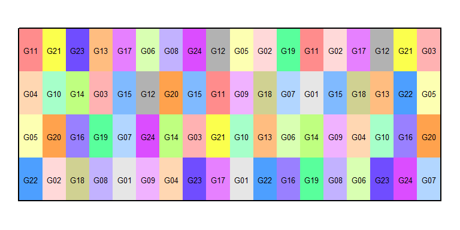
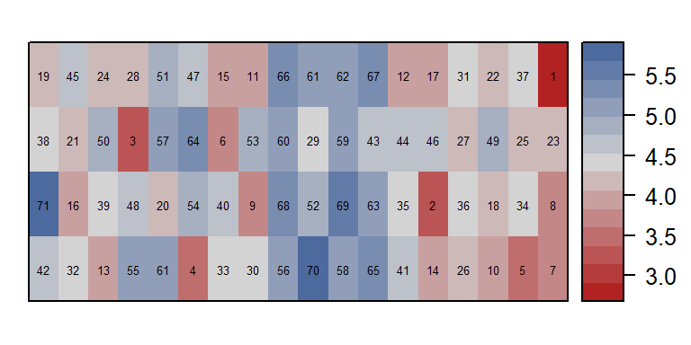
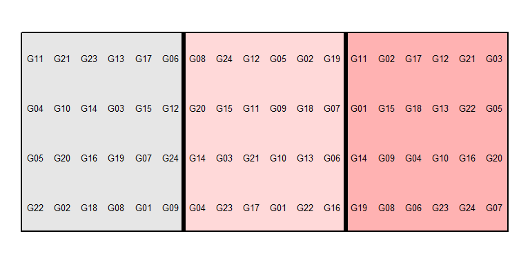
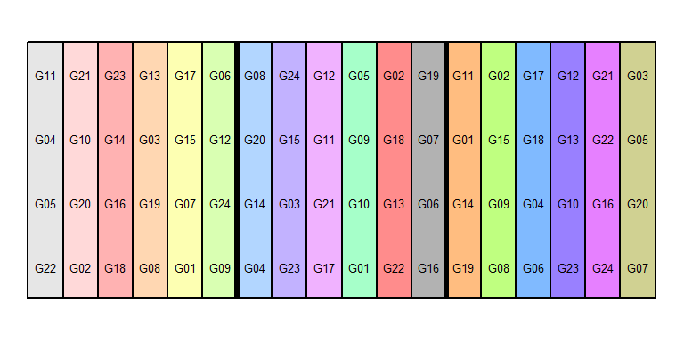
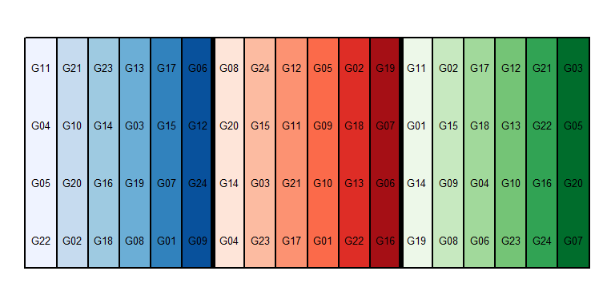
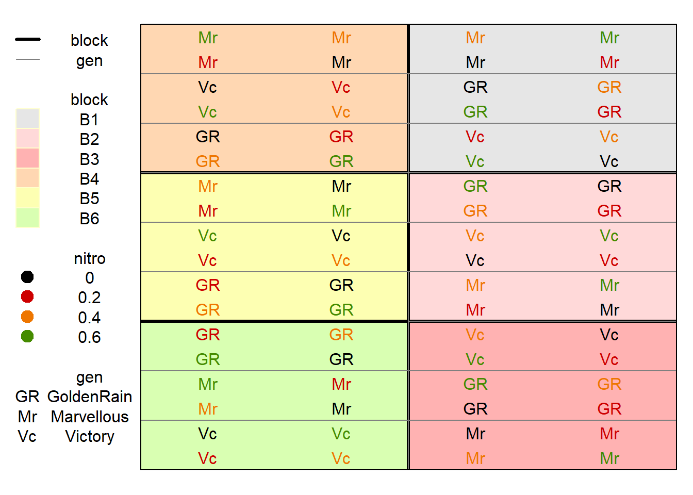
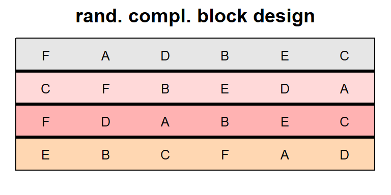
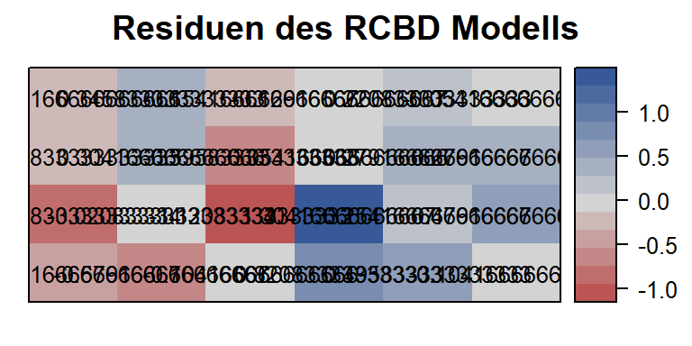

Die Feldpläne, die das Versuchsdesign in den verschiedenen Kapiteln dieser Website grafisch darstellen, wurden mit dem desplot package erstellt. Hier sind beispielhaft ein paar Codes aufgeführt. Für detaillierte Informationen zu den einzelnen Argumenten der Funktion siehe ?desplot.
library(desplot)Bei diesem Datensatz handelt es sich um ein \(\alpha\)-Design mit 3 vollständigen Blöcken, die jeweils 6 unvollständige Blöcke a 4 Parzellen enthalten. Es wurden 24 Sorten geprüft.
head(alpha)## row col rep gen inc.block yield
## 1: 4 1 R1 G11 R1-B1 41.172
## 2: 3 1 R1 G04 R1-B1 44.461
## 3: 2 1 R1 G05 R1-B1 58.757
## 4: 1 1 R1 G22 R1-B1 45.784
## 5: 4 2 R1 G21 R1-B2 46.540
## 6: 3 2 R1 G10 R1-B2 41.736str(alpha, width=40, strict.width="cut")## Classes 'data.table' and 'data.frame': 72 obs. of 6 variables:
## $ row : int 4 3 2 1 4 3 2 1 4 3..
## $ col : int 1 1 1 1 2 2 2 2 3 3..
## $ rep : Factor w/ 3 levels "R1""..
## $ gen : Factor w/ 24 levels "G0"..
## $ inc.block: chr "R1-B1" "R1-B1" "R"..
## $ yield : num 41.2 44.5 58.8 45.8..
## - attr(*, ".internal.selfref")=<exter..Die Variable, die im form= Argument links der Tilde steht, bestimmt die Färbung der Parzelle. Desweiteren können wir mit dem text= Argument die Parzellenbeschriftung bestimmen.
desplot(data=alpha, form= gen ~ col+row,
text=gen, shorten="no",
main="", show.key=F)
Im form= Argument kann auch eine numerische Variable, wie z.B. der Ertrag eingfügt werden. Dann sollte statt des text= Arguments das num= Argument genutzt werden.
desplot(data=alpha, form= yield ~ col+row,
num=yield,
main="", show.key=F)
Mit den out1 = und out2= Argumenten kann angegeben werden um welche Gruppen von Parzellen Linien gezogen werden sollen. Dies ist z.B. für Blöcke sinnvoll.
desplot(data=alpha, form= rep ~ col+row,
text=gen, shorten="no",
out1=rep,
main="",
show.key=F)
desplot(data=alpha, form= inc.block ~ col+row,
text=gen, shorten="no",
out1=rep, out2=inc.block,
out2.gpar=list(col="black"),
main="", show.key=F)
Außerdem können sämtliche Farben des Plots selbst ausgesucht werden. Die Farbwahl in R ist generell sehr groß. Wer nicht jede Farbe einzeln aussuchen möchte, kann das package RColorBrewer nutzen. So können wir für die unvollständigen Blöcke mit dem brewer.pal() Statement je 6 blau-, rot- und grün-Töne pro vollständigem Block auswählen um die Eigenschaften des Designs noch klarer hervorzuheben.
library(RColorBrewer)
mycolors <- c(brewer.pal(6, "Blues"),
brewer.pal(6, "Reds"),
brewer.pal(6, "Greens"))
desplot(data=alpha, form= inc.block ~ col+row,
col.regions=mycolors,
text=gen, shorten="no",
out1=rep,
out2=inc.block,
out2.gpar=list(col="black"),
main="", show.key=F)
In diesem Beispiel gibt es neben den Faktor Sorte (3 Stufen) einen zweiten Faktor Nitro (4 Stufen) und somit 12 Faktorkombinationen. Der Versuch wurde als Split-Plot design angelegt: Es gibt 6 vollständige Blöcke, in denen die 3 Sorten jeweils in 4 Parzellen gruppiert (= Main Plot) vorkommen. Es wurden also im ersten Schritt den Main Plots zufällig Sorten zugewiesen und im zweiten Schritt die Nitro-Stufen innerhalb jedes Main Plots randomisiert.
head(oats)## row col block gen nitro yield
## 1: 16 3 B1 GoldenRain 0 80
## 2: 12 4 B2 GoldenRain 0 60
## 3: 3 3 B3 GoldenRain 0 89
## 4: 14 1 B4 GoldenRain 0 117
## 5: 8 2 B5 GoldenRain 0 64
## 6: 5 2 B6 GoldenRain 0 70str(oats, width=40, strict.width="cut")## Classes 'data.table' and 'data.frame': 72 obs. of 6 variables:
## $ row : int 16 12 3 14 8 5 15 11 3 ..
## $ col : int 3 4 3 1 2 2 4 4 4 2 ...
## $ block: Factor w/ 6 levels "B1","B2"..
## $ gen : Factor w/ 3 levels "GoldenR"..
## $ nitro: num 0 0 0 0 0 0 0.2 0.2 0.2..
## $ yield: int 80 60 89 117 64 70 82 1..
## - attr(*, ".internal.selfref")=<exter..Um auch den zweiten Faktor farblich hervorheben zu können, kann man mit dem col= statement zusätzlich die Beschriftung der Parzellen einfärben. In Beispiel 1 hatten wir zum einen mit dem show.key=F statement das Anzeigen einer Legende unterdrückt, zum anderen mit dem shorten="no" statement das Kürzen der Sortennamen verboten. Hier ist beides jedoch sehr hilfreich.
desplot(data=oats, form=block ~ col+row,
text=gen, cex=1, col=nitro,
out1=block,
out2=gen, out2.gpar=list(col="gray50"),
main="")
Hier handelt es sich um einem Versuch in dem der Trockenmasseertrag von 6 Erdnusssorten verglichen wurde. Der Versuch ist als randomisierte vollständige Blockanlage (RCBD) angelegt.
head(nuts)## row col block gen dry
## 1: 4 1 B1 F 2.3
## 2: 4 2 B1 A 3.3
## 3: 4 3 B1 D 1.8
## 4: 4 4 B1 B 1.8
## 5: 4 5 B1 E 2.8
## 6: 4 6 B1 C 1.4str(nuts, width=40, strict.width="cut")## Classes 'data.table' and 'data.frame': 24 obs. of 5 variables:
## $ row : int 4 4 4 4 4 4 3 3 3 3 ...
## $ col : int 1 2 3 4 5 6 1 2 3 4 ...
## $ block: Factor w/ 4 levels "B1","B2"..
## $ gen : Factor w/ 6 levels "A","B","..
## $ dry : num 2.3 3.3 1.8 1.8 2.8 1.4..
## - attr(*, ".internal.selfref")=<exter..In diesem Beispiel wollen wir einen zusätzlichen Plot erstellen. Im Gegensatz zu den vorangegangenen Plots soll hier der Fokus weder auf dem Versuchsdesign, noch den Messwerten liegen. Stattdessen sollen die Daten erst modelliert werden und dann die Residuen dargestellt werden.
mod <- lm(data=nuts, formula= dry ~ block + gen)
nuts$res <- resid(mod)desplot(data=nuts, form= block ~ col+row,
text=gen, cex=0.8,
out1=block, show.key=F,
main="rand. compl. block design")
desplot(data=nuts, form= res ~ col+row,
text=res, cex=0.8, shorten="no",
show.key=F,
main="Residuen des RCBD Modells")
So fällt hier auf, dass das größte und kleinste Residuum direkt nebeneinander vorkommen. Ein Grund dafür könnte sein, dass die Ertragswerte dieser beiden Parzellen versehentlich vertauscht wurden.